Inductores
Campos magnéticos e inductancia
Siempre que los electrones fluyen a través de un conductor, se desarrollará un campo magnético alrededor de ese conductor. Este efecto se llamaelectromagnetismo. Los campos magnéticos afectan la alineación de los electrones en un átomo y pueden hacer que se desarrolle fuerza física entre los átomos a través del espacio, al igual que los campos eléctricos desarrollan fuerza entre partículas cargadas eléctricamente. Al igual que los campos eléctricos, los campos magnéticos pueden ocupar un espacio completamente vacío y afectar la materia a distancia.
Los campos tienen dos medidas: un campofuerzay un campoflujo. el campofuerzaes la cantidad de "empuje" que ejerce un campo a lo largo de una determinada distancia. el campoflujoes la cantidad total, o efecto, del campo a través del espacio. La fuerza de campo y el flujo son aproximadamente análogos al voltaje ("empuje") y la corriente (flujo) a través de un conductor, respectivamente, aunque el flujo de campo puede existir en un espacio totalmente vacío (sin el movimiento de partículas como los electrones), mientras que la corriente sólo puede tener lugar donde hay electrones libres para moverse. El flujo de campo puede oponerse en el espacio, del mismo modo que la resistencia puede oponerse al flujo de electrones. La cantidad de flujo de campo que se desarrollará en el espacio es proporcional a la cantidad de fuerza de campo aplicada, dividida por la cantidad de oposición al flujo. Así como el tipo de material conductor dicta la resistencia específica de ese conductor a la corriente eléctrica, el tipo de material que ocupa el espacio a través del cual se imprime una fuerza de campo magnético dicta la oposición específica al flujo del campo magnético.
Mientras que un flujo de campo eléctrico entre dos conductores permite una acumulación de carga de electrones libres dentro de esos conductores, un flujo de campo magnético permite que se acumule cierta "inercia" en el flujo de electrones a través del conductor que produce el campo.
InductoresSon componentes diseñados para aprovechar este fenómeno dando forma a la longitud del cable conductor en forma de bobina. Esta forma crea un campo magnético más fuerte que el que produciría un cable recto. Algunos inductores están formados con alambre enrollado en una bobina autoportante. Otros enrollan el cable alrededor de un material de núcleo sólido de algún tipo. A veces, el núcleo de un inductor será recto y otras veces estará unido en un bucle (cuadrado, rectangular o circular) para contener completamente el flujo magnético. Todas estas opciones de diseño tienen un efecto en el rendimiento y las características de los inductores.
El símbolo esquemático de un inductor, como el condensador, es bastante simple y es poco más que un símbolo de bobina que representa el cable enrollado. Aunque una forma de bobina simple es el símbolo genérico de cualquier inductor, los inductores con núcleos a veces se distinguen por la adición de líneas paralelas al eje de la bobina. Una versión más nueva del símbolo del inductor prescinde de la forma de la bobina en favor de varias "jorobas" seguidas:
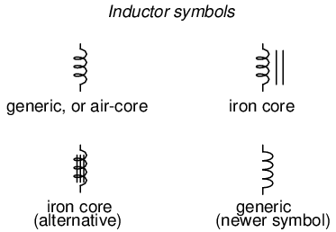
Como la corriente eléctrica produce un campo magnético concentrado alrededor de la bobina, este flujo de campo equivale a un almacenamiento de energía que representa el movimiento cinético de los electrones a través de la bobina. Cuanta más corriente haya en la bobina, más fuerte será el campo magnético y más energía almacenará el inductor.
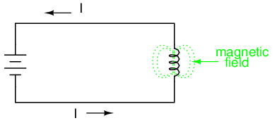
Debido a que los inductores almacenan la energía cinética de los electrones en movimiento en forma de campo magnético, se comportan de manera muy diferente a las resistencias (que simplemente disipan energía en forma de calor) en un circuito. El almacenamiento de energía en un inductor es función de la cantidad de corriente que lo atraviesa. La capacidad de un inductor para almacenar energía en función de la corriente da como resultado una tendencia a intentar mantener la corriente a un nivel constante. En otras palabras, los inductores tienden a resistircambiosen corriente. Cuando la corriente a través de un inductor aumenta o disminuye, el inductor "resiste" lacambiarproduciendo un voltaje entre sus cables en polaridad opuesta a lacambiar.
Para almacenar más energía en un inductor, se debe aumentar la corriente que lo atraviesa. Esto significa que su campo magnético debe aumentar en intensidad y ese cambio en la intensidad del campo produce el voltaje correspondiente según el principio de autoinducción electromagnética. Por el contrario, para liberar energía de un inductor, se debe disminuir la corriente que lo atraviesa. Esto significa que el campo magnético del inductor debe disminuir en intensidad, y ese cambio en la intensidad del campo autoinduce una caída de voltaje de polaridad opuesta.
Así como la primera Ley del Movimiento de Isaac Newton ("un objeto en movimiento tiende a permanecer en movimiento; un objeto en reposo tiende a permanecer en reposo") describe la tendencia de una masa a oponerse a los cambios de velocidad, podemos establecer la tendencia de un inductor a oponerse a los cambios de corriente como tal: "Los electrones que se mueven a través de un inductor tienden a permanecer en movimiento; los electrones en reposo en un inductor tienden a permanecer en reposo". Hipotéticamente, un inductor que se deja en cortocircuito mantendrá una tasa de corriente constante a través de él sin ayuda externa:
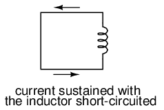
Sin embargo, en la práctica, la capacidad de un inductor de autosostenir corriente se logra sólo con un cable superconductor, ya que la resistencia del cable en cualquier inductor normal es suficiente para hacer que la corriente decaiga muy rápidamente sin ninguna fuente de energía externa.
Cuando aumenta la corriente a través de un inductor, cae un voltaje que se opone a la dirección del flujo de electrones, actuando como una carga de energía. En esta condición se dice que el inductor estácargando, porque hay una cantidad cada vez mayor de energía almacenada en su campo magnético. Tenga en cuenta la polaridad del voltaje con respecto a la dirección de la corriente:
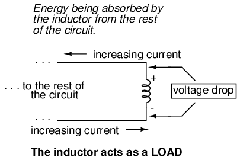
Por el contrario, cuando la corriente a través del inductor disminuye, cae un voltaje que ayuda a la dirección del flujo de electrones, actuando como una fuente de energía. En esta condición se dice que el inductor estádescarga, porque su reserva de energía disminuye a medida que libera energía de su campo magnético al resto del circuito. Tenga en cuenta la polaridad del voltaje con respecto a la dirección de la corriente.
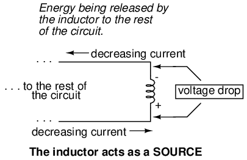
Si de repente se aplica una fuente de energía eléctrica a un inductor no magnetizado, el inductor inicialmente resistirá el flujo de electrones reduciendo todo el voltaje de la fuente. A medida que la corriente comienza a aumentar, se creará un campo magnético cada vez más fuerte, absorbiendo energía de la fuente. Finalmente, la corriente alcanza un nivel máximo y deja de aumentar. En este punto, el inductor deja de absorber energía de la fuente y cae un voltaje mínimo a través de sus cables, mientras que la corriente permanece en un nivel máximo. A medida que un inductor almacena más energía, su nivel de corriente aumenta, mientras que su caída de voltaje disminuye. Tenga en cuenta que esto es precisamente lo opuesto al comportamiento del condensador, donde el almacenamiento de energía da como resultado un aumento de voltaje en el componente. Mientras que los condensadores almacenan su carga de energía manteniendo un voltaje estático, los inductores mantienen su "carga" de energía manteniendo una corriente constante a través de la bobina.
El tipo de material alrededor del cual está enrollado el cable impacta en gran medida la fuerza del flujo del campo magnético (y por lo tanto la cantidad de energía almacenada) generada para cualquier cantidad dada de corriente a través de la bobina. Los núcleos de bobina hechos de materiales ferromagnéticos (como el hierro dulce) estimularán el desarrollo de flujos de campo más fuertes con una fuerza de campo determinada que las sustancias no magnéticas como el aluminio o el aire.
La medida de la capacidad de un inductor para almacenar energía para una determinada cantidad de flujo de corriente se llamainductancia. No es sorprendente que la inductancia sea también una medida de la intensidad de la oposición a los cambios en la corriente (exactamente cuánto voltaje autoinducido se producirá para una determinada tasa de cambio de corriente). La inductancia se indica simbólicamente con una "L" mayúscula y se mide en la unidad Henry, abreviada como "H".
Un nombre obsoleto para un inductor esahogo, llamado así por su uso común para bloquear ("estrangular") señales de CA de alta frecuencia en circuitos de radio. Otro nombre para un inductor, todavía utilizado en los tiempos modernos, esreactor, especialmente cuando se utiliza en aplicaciones de gran potencia. Ambos nombres tendrán más sentido después de haber estudiado la teoría de circuitos de corriente alterna (CA), y especialmente un principio conocido comoreactancia inductiva.
- REVISAR:
- Los inductores reaccionan contra los cambios de corriente reduciendo el voltaje en la polaridad necesaria para oponerse al cambio.
- Cuando un inductor se enfrenta a una corriente creciente, actúa como una carga: cae el voltaje a medida que absorbe energía (negativa en el lado de entrada de corriente y positiva en el lado de salida de corriente, como una resistencia).
- Cuando un inductor se enfrenta a una corriente decreciente, actúa como una fuente: crea voltaje a medida que libera energía almacenada (positiva en el lado de entrada de corriente y negativa en el lado de salida de corriente, como una batería).
- La capacidad de un inductor para almacenar energía en forma de campo magnético (y en consecuencia oponerse a los cambios de corriente) se llamainductancia. Se mide en la unidad deEnrique(H).
- Los inductores solían ser conocidos comúnmente con otro término:ahogo. En aplicaciones de gran potencia, a veces se les conoce comoreactores.
Inductores y cálculo diferencial
Los inductores no tienen una "resistencia" estable como la tienen los conductores. Sin embargo, existe una relación matemática definida entre el voltaje y la corriente de un inductor, como sigue:
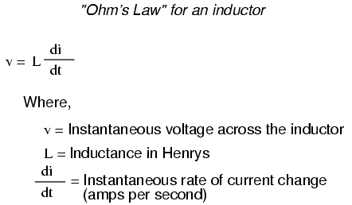
Deberías reconocer la forma de esta ecuación en el capítulo sobre condensadores. Relaciona una variable (en este caso, la caída de voltaje del inductor) con unatasa de cambiode otra variable (en este caso, la corriente del inductor). Tanto el voltaje (v) como la tasa de cambio de corriente (di/dt) soninstantáneo: es decir, en relación con un momento específico en el tiempo, de ahí las letras minúsculas "v" e "i". Al igual que con la fórmula del capacitor, es una convención expresar el voltaje instantáneo comoven vez dee, pero usar esta última designación no estaría mal. La tasa de cambio de corriente (di/dt) se expresa en unidades de amperios por segundo, un número positivo representa un aumento y un número negativo representa una disminución.
Al igual que un condensador, el comportamiento de un inductor se basa en la variable del tiempo. Aparte de cualquier resistencia intrínseca a la bobina de alambre de un inductor (que asumiremos que es cero por el bien de esta sección), la caída de voltaje a través de los terminales de un inductor está puramente relacionada con la rapidez con la que cambia su corriente con el tiempo.
Supongamos que tuviéramos que conectar un inductor perfecto (uno que tenga cero ohmios de resistencia del cable) a un circuito donde pudiéramos variar la cantidad de corriente a través de él con un potenciómetro conectado como una resistencia variable:
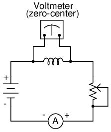
Si el mecanismo del potenciómetro permanece en una sola posición (el limpiador está estacionario), el amperímetro conectado en serie registrará una corriente constante (sin cambios) y el voltímetro conectado a través del inductor registrará 0 voltios. En este escenario, la tasa instantánea de cambio de corriente (di/dt) es igual a cero, porque la corriente es estable. La ecuación nos dice que con un cambio de 0 amperios por segundo para un di/dt, debe haber un voltaje instantáneo (v) cero a través del inductor. Desde una perspectiva física, sin cambios de corriente, el inductor generará un campo magnético constante. Sin cambios en el flujo magnético (dΦ/dt = 0 Webers por segundo), no habrá caída de voltaje a lo largo de la bobina debido a la inducción.
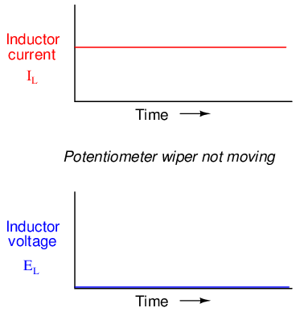
Si movemos el limpiador del potenciómetro lentamente en la dirección "arriba", su resistencia de un extremo a otro disminuirá lentamente. Esto tiene el efecto de aumentar la corriente en el circuito, por lo que la indicación del amperímetro debería aumentar a un ritmo lento:
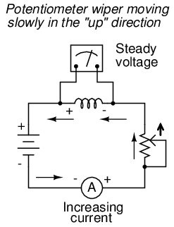
Suponiendo que el limpiador del potenciómetro se esté moviendo de manera que eltasaSi el aumento de corriente a través del inductor es constante, el término di/dt de la fórmula será un valor fijo. Este valor fijo, multiplicado por la inductancia del inductor en Henrys (también fija), da como resultado un voltaje fijo de cierta magnitud. Desde una perspectiva física, el aumento gradual de la corriente da como resultado un campo magnético que también aumenta. Este aumento gradual en el flujo magnético hace que se induzca un voltaje en la bobina expresado por la ecuación de inducción de Michael Faraday e = N(dΦ/dt). Este voltaje autoinducido a través de la bobina, como resultado de un cambio gradual en la magnitud de la corriente a través de la bobina, resulta ser de una polaridad que intenta oponerse al cambio de corriente. En otras palabras, la polaridad del voltaje inducido resultante de unaaumentaren la corriente se orientará de tal manera que empujecontrala dirección de la corriente, para tratar de mantener la corriente en su magnitud anterior. Este fenómeno exhibe un principio más general de la física conocido comoLey de Lenz, que afirma que un efecto inducido siempre será opuesto a la causa que lo produce.
En este escenario, el inductor actuará como uncarga, con el lado negativo del voltaje inducido en el extremo por donde entran los electrones y el lado positivo del voltaje inducido en el extremo por donde salen los electrones.
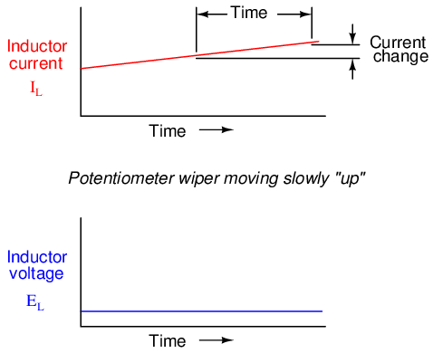
Cambiar la tasa de aumento de corriente a través del inductor moviendo el limpiador del potenciómetro "hacia arriba" a diferentes velocidades da como resultado diferentes cantidades de voltaje que caen a través del inductor, todos con la misma polaridad (opuesta al aumento de corriente):
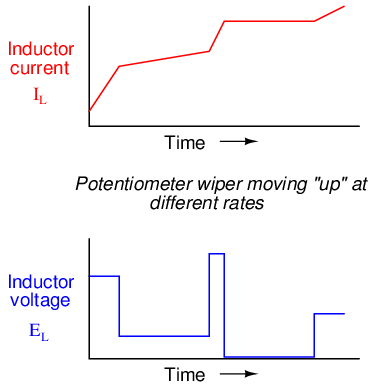
Aquí nuevamente vemos elderivadoFunción del cálculo exhibida en el comportamiento de un inductor. En términos de cálculo, diríamos que el voltaje inducido a través del inductor es la derivada de la corriente a través del inductor: es decir, proporcional a la tasa de cambio de la corriente con respecto al tiempo.
Invertir la dirección del movimiento del limpiador en el potenciómetro (haciendo "hacia abajo" en lugar de "hacia arriba") hará que aumente su resistencia de extremo a extremo. Esto dará como resultado que la corriente del circuito disminuya (unnegativocifra para di/dt). El inductor, siempre oponiéndose a cualquier cambio de corriente, producirá una caída de voltaje opuesta a la dirección del cambio:
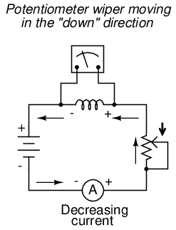
La cantidad de voltaje que producirá el inductor depende, por supuesto, de la rapidez con la que disminuye la corriente que lo atraviesa. Como lo describe la Ley de Lenz, el voltaje inducido se opondrá al cambio de corriente. con undecrecientecorriente, la polaridad del voltaje se orientará para tratar de mantener la corriente en su magnitud anterior. En este escenario, el inductor actuará como unfuente, con el lado negativo del voltaje inducido en el extremo por donde salen los electrones y el lado positivo del voltaje inducido en el extremo por donde entran los electrones. Cuanto más rápidamente disminuya la corriente, más voltaje producirá el inductor, al liberar energía almacenada para tratar de mantener la corriente constante.
Nuevamente, la cantidad de voltaje a través de un inductor perfecto es directamente proporcional a la tasa de cambio de corriente a través de él. La única diferencia entre los efectos de unacorriente decrecientey unacorriente crecientees lapolaridaddel voltaje inducido. Para la misma tasa de cambio de corriente a lo largo del tiempo, ya sea aumentando o disminuyendo, la magnitud del voltaje (voltios) será la misma. Por ejemplo, un di/dt de -2 amperios por segundo producirá la misma cantidad de caída de voltaje inducida a través de un inductor que un di/dt de +2 amperios por segundo, justo en la polaridad opuesta.
Si se fuerza que la corriente a través de un inductor cambie muy rápidamente, se producirán voltajes muy altos. Considere el siguiente circuito:
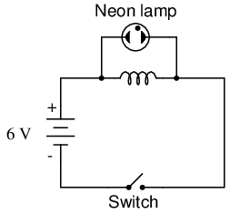
En este circuito, se conecta una lámpara a través de los terminales de un inductor. Se utiliza un interruptor para controlar la corriente en el circuito y la energía es suministrada por una batería de 6 voltios. Cuando el interruptor está cerrado, el inductor se opondrá brevemente al cambio de corriente de cero a cierta magnitud, pero solo reducirá una pequeña cantidad de voltaje. Se necesitan alrededor de 70 voltios para ionizar el gas de neón dentro de una bombilla de neón como esta, por lo que la bombilla no puede encenderse con los 6 voltios producidos por la batería, o el bajo voltaje cae momentáneamente por el inductor cuando el interruptor está cerrado:
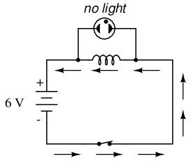
Sin embargo, cuando se abre el interruptor, de repente se introduce una resistencia extremadamente alta en el circuito (la resistencia del entrehierro entre los contactos). Esta introducción repentina de alta resistencia en el circuito hace que la corriente del circuito disminuya casi instantáneamente. Matemáticamente, el término di/dt será un número negativo muy grande. Un cambio tan rápido de corriente (de cierta magnitud a cero en muy poco tiempo) inducirá un voltaje muy alto a través del inductor, orientado con negativo a la izquierda y positivo a la derecha, en un esfuerzo por oponerse a esta disminución de corriente. El voltaje producido suele ser más que suficiente para encender la lámpara de neón, aunque sólo sea por un breve momento hasta que la corriente desciende a cero:
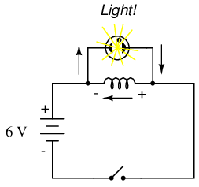
Para obtener el máximo efecto, el tamaño del inductor debe ser lo más grande posible (al menos 1 Henry de inductancia).
Factors affecting inductance
Hay cuatro factores básicos en la construcción de un inductor que determinan la cantidad de inductancia creada. Todos estos factores dictan la inductancia al afectar la cantidad de flujo de campo magnético que se desarrollará para una cantidad determinada de fuerza de campo magnético (corriente a través de la bobina de alambre del inductor):
NÚMERO DE ENVOLTURAS DE ALAMBRE O "VUELTAS" EN LA BOBINA:En igualdad de condiciones, un mayor número de vueltas de cable en la bobina produce una mayor inductancia; Menos vueltas de cable en la bobina dan como resultado menos inductancia.
Explicación:Más vueltas de cable significan que la bobina generará una mayor cantidad de fuerza de campo magnético (¡medida en amperios-vueltas!), para una cantidad determinada de corriente de la bobina.
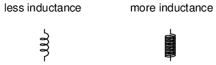
ÁREA DE LA BOBINA:Si todos los demás factores son iguales, una mayor área de la bobina (medida mirando longitudinalmente a través de la bobina, en la sección transversal del núcleo) da como resultado una mayor inductancia; menos área de bobina da como resultado menos inductancia.
Explicación:Un área de bobina mayor presenta menos oposición a la formación de flujo de campo magnético, para una cantidad determinada de fuerza de campo (amperios-vueltas).
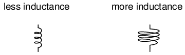
LONGITUD DE LA BOBINA:En igualdad de condiciones, cuanto mayor sea la longitud de la bobina, menor será la inductancia; cuanto más corta sea la longitud de la bobina, mayor será la inductancia.
Explicación:Un camino más largo para el flujo del campo magnético da como resultado una mayor oposición a la formación de ese flujo para cualquier cantidad dada de fuerza de campo (amperios-vueltas).
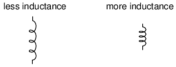
MATERIAL DEL NÚCLEO:En igualdad de condiciones, cuanto mayor sea la permeabilidad magnética del núcleo alrededor del cual está enrollada la bobina, mayor será la inductancia; cuanto menor es la permeabilidad del núcleo, menor es la inductancia.
Explicación:Un material central con mayor permeabilidad magnética da como resultado un mayor flujo de campo magnético para cualquier cantidad dada de fuerza de campo (amperios-vueltas).
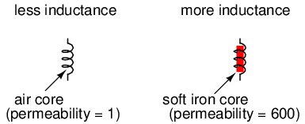
Se puede encontrar una aproximación de la inductancia para cualquier bobina de alambre con esta fórmula:
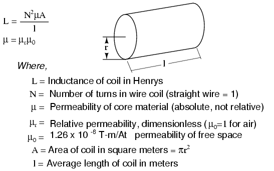
Debe entenderse que esta fórmula produceaproximadosolo figuras. Una razón para esto es el hecho de que la permeabilidad cambia a medida que varía la intensidad del campo (recuerde las curvas no lineales "B/H" para diferentes materiales). Obviamente, si la permeabilidad (μ) en la ecuación es inestable, entonces la inductancia (L) también será inestable hasta cierto punto a medida que la corriente a través de la bobina cambie de magnitud. Si la histéresis del material del núcleo es significativa, esto también tendrá efectos extraños en la inductancia de la bobina. Los diseñadores de inductores intentan minimizar estos efectos diseñando el núcleo de tal manera que su densidad de flujo nunca se acerque a los niveles de saturación, por lo que el inductor opera en una porción más lineal de la curva B/H.
Si un inductor está diseñado de manera que cualquiera de estos factores pueda variar a voluntad, su inductancia variará correspondientemente. Los inductores variables generalmente se fabrican proporcionando una forma de variar el número de vueltas de cable en uso en un momento dado, o variando el material del núcleo (un núcleo deslizante que se puede mover hacia adentro y hacia afuera de la bobina). En esta fotografía se muestra un ejemplo del diseño anterior:
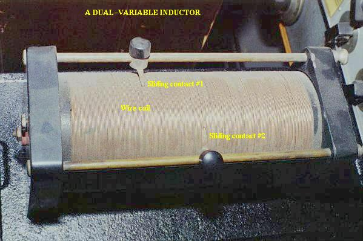
Esta unidad utiliza contactos deslizantes de cobre para conectarse a la bobina en diferentes puntos a lo largo de su longitud. La unidad que se muestra es un inductor de núcleo de aire utilizado en los primeros trabajos de radio.
En la siguiente fotografía se muestra un inductor de valor fijo, otra unidad antigua con núcleo de aire construida para radios. En la parte inferior se pueden ver los terminales de conexión, así como algunas vueltas de cable relativamente grueso:
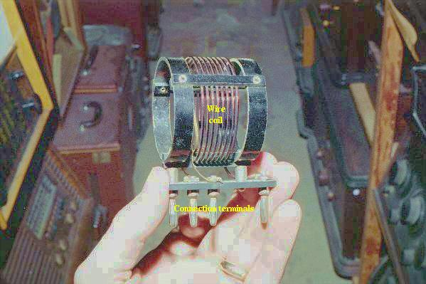
Aquí hay otro inductor (de mayor valor de inductancia), también destinado a aplicaciones de radio. Su bobina de alambre está enrollada alrededor de un tubo cerámico blanco para mayor rigidez:
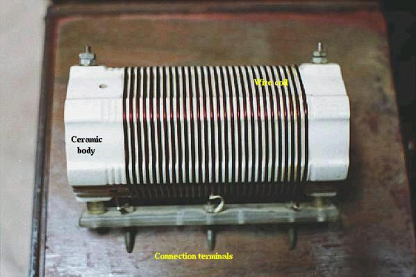
Los inductores también pueden hacerse muy pequeños para aplicaciones de placas de circuito impreso. Examine de cerca la siguiente fotografía y vea si puede identificar dos inductores cerca uno del otro:

Los dos inductores de esta placa de circuito están etiquetados como L.1y l2, y están ubicados en el centro-derecha del tablero. Dos componentes cercanos son R3(una resistencia) y C16(un condensador). Estos inductores se denominan "toroidales" porque sus bobinas de alambre están enrolladas alrededor de núcleos en forma de rosquilla ("toroidales").
Al igual que las resistencias y los condensadores, los inductores también se pueden empaquetar como "dispositivos de montaje en superficie". La siguiente fotografía muestra cuán pequeño puede ser un inductor empaquetado como tal:

Se puede ver un par de inductores en esta placa de circuito, a la derecha y al centro, que aparecen como pequeños chips negros con el número "100" impreso en ambos. La etiqueta del inductor superior se puede ver impresa en la placa de circuito verde como L5. Por supuesto, estos inductores tienen un valor de inductancia muy pequeño, pero demuestra cuán pequeños pueden fabricarse para satisfacer ciertas necesidades de diseño de circuitos.
Inductores en serie y en paralelo
Cuando los inductores se conectan en serie, la inductancia total es la suma de las inductancias de los inductores individuales. Para entender por qué esto es así, considere lo siguiente: la medida definitiva de la inductancia es la cantidad de voltaje que cae a través de un inductor para una tasa determinada de cambio de corriente a través de él. Si los inductores están conectados en serie (compartiendo así la misma corriente y viendo la misma tasa de cambio en la corriente), entonces el voltaje total caído como resultado de un cambio en la corriente será aditivo con cada inductor, creando un voltaje total mayor que cualquiera de los inductores individuales por separado. Un voltaje mayor para la misma tasa de cambio de corriente significa una inductancia mayor.
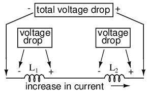
Por lo tanto, la inductancia total de los inductores en serie es mayor que la inductancia de cualquiera de los inductores individuales. La fórmula para calcular la inductancia total en serie es la misma que para calcular las resistencias en serie:
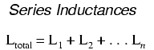
Cuando los inductores se conectan en paralelo, la inductancia total es menor que la inductancia de cualquiera de los inductores en paralelo. Nuevamente, recuerde que la medida definitiva de la inductancia es la cantidad de voltaje que cae a través de un inductor para una tasa determinada de cambio de corriente a través de él. Dado que la corriente a través de cada inductor paralelo será una fracción de la corriente total, y el voltaje a través de cada inductor paralelo será igual, un cambio en la corriente total dará como resultado una caída de voltaje menor a través del conjunto paralelo que para cualquiera de los inductores considerados por separado. En otras palabras, habrá menos caída de voltaje a través de inductores paralelos para una tasa de cambio dada en la corriente que para cualquiera de esos inductores considerados por separado, porque la corriente total se divide entre las ramas paralelas. Menos voltaje para la misma tasa de cambio de corriente significa menos inductancia.
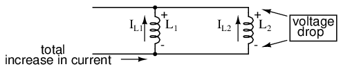
Por tanto, la inductancia total es menor que la inductancia de cualquiera de los inductores individuales. La fórmula para calcular la inductancia total en paralelo es la misma que para calcular las resistencias en paralelo:
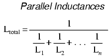
- REVISAR:
- Las inductancias se suman en serie.
- Las inductancias disminuyen en paralelo.
Consideraciones prácticas
Los inductores, como todos los componentes eléctricos, tienen limitaciones que deben respetarse en aras de la confiabilidad y el funcionamiento adecuado del circuito.
Corriente nominal:Dado que los inductores están construidos con alambre enrollado y cualquier cable estará limitado en su capacidad de transportar corriente por su resistencia y capacidad para disipar el calor, debe prestar atención a la corriente máxima permitida a través de un inductor.
Circuito equivalente:Dado que el cable del inductor tiene cierta resistencia y las limitaciones del diseño del circuito generalmente exigen que el inductor se construya con las dimensiones más pequeñas posibles, no existe un inductor "perfecto". El cable de la bobina inductora generalmente presenta una cantidad sustancial de resistencia en serie, y el espaciamiento cercano del cable de una vuelta de la bobina a otra (separado por aislamiento) puede presentar cantidades mensurables de capacitancia parásita para interactuar con sus características puramente inductivas. A diferencia de los condensadores, que son relativamente fáciles de fabricar con efectos parásitos insignificantes, los inductores son difíciles de encontrar en forma "pura". En determinadas aplicaciones, estas características indeseables pueden presentar importantes problemas de ingeniería.
Tamaño del inductor:Los inductores tienden a ser mucho más grandes, físicamente, que los condensadores para almacenar cantidades equivalentes de energía. Esto es especialmente cierto teniendo en cuenta los avances recientes en la tecnología de condensadores electrolíticos, que permiten empaquetar valores de capacitancia increíblemente grandes en un paquete pequeño. Si un diseñador de circuitos necesita almacenar una gran cantidad de energía en un volumen pequeño y tiene la libertad de elegir condensadores o inductores para la tarea, lo más probable es que elija un condensador. Una excepción notable a esta regla son las aplicaciones que requierenenormecantidades de capacitancia o inductancia para almacenar energía eléctrica: los inductores hechos de alambre superconductor (resistencia cero) son más prácticos de construir y operar de manera segura que los capacitores de valor equivalente, y probablemente también sean más pequeños.
Interferencia:Los inductores pueden afectar a los componentes cercanos de una placa de circuito con sus campos magnéticos, que pueden extenderse distancias significativas más allá del inductor. Esto es especialmente cierto si hay otros inductores cerca de la placa de circuito. Si los campos magnéticos de dos o más inductores pueden "conectarse" con las vueltas de cable de cada uno, habrá inductancia mutua presente en el circuito, así como autoinductancia, lo que muy bien podría causar efectos no deseados. Esta es otra razón por la que los diseñadores de circuitos tienden a elegir condensadores en lugar de inductores para realizar tareas similares: los condensadores contienen inherentemente sus respectivos campos eléctricos perfectamente dentro del paquete de componentes y, por lo tanto, normalmente no generan ningún efecto "mutuo" con otros componentes.
Colaboradores
Los contribuyentes a este capítulo se enumeran en orden cronológico de sus contribuciones, desde el más reciente hasta el primero. Consulte el Apéndice 2 (Lista de colaboradores) para fechas e información de contacto.
Jason Stark(Junio de 2000): Formato de documentos HTML, que dio lugar a una segunda edición mucho más atractiva.
Lecciones en circuitos eléctricoscopyright (C) 2000-2023 Tony R. Kuphaldt, según los términos y condiciones delCC BY License.